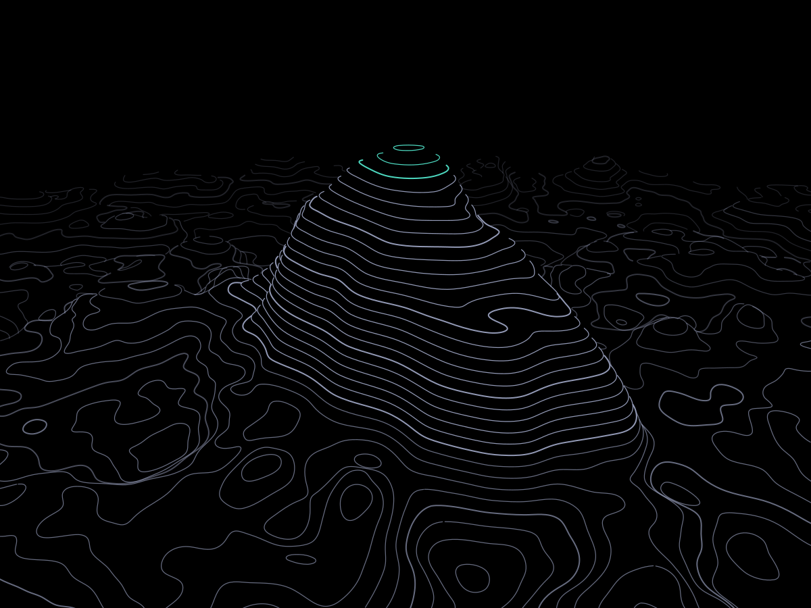

Behind the work
We drew a mountain. Then we drew it again.
- Written by
 The Tibba team
The Tibba team- Published in
- Behind the work · Nov 2026
- Reading time
- 8 minutes

The first thing you see on tibba.design is a mountain.
It counts up from the valley floor.
The camera drops into it.
A thin line climbs to the summit.
It took a year of sketches, one stubborn generator and a lot of contour lines. This is how it got there.
Why a mountain
Tibba means a small hill.
We’ve always described our work as climbing with a client: base camp, the ascent, the summit, then the next peak.
So a mountain was the obvious symbol.
Which is exactly why it was hard.
Obvious symbols go generic fast. So: no stock peaks. No low-poly triangles. No snowy photograph.
We didn’t want a picture of a mountain. We wanted a map of one, that you could walk.
— The Tibba team
Maps gave us the language.
A contour line is honest: one line, one height. The spacing between lines tells you how steep the ground is.
Put enough of them together and a flat screen suddenly has a slope.
A recipe, not a model
Every mountain on the site comes from one generator. We call it the landform.
It’s a handful of parts summed together, each with a height, a spread and a sharpness.
One part on its own is a cone. Nobody believes a cone.
The character comes from what we cut into it:
- Domain warp pushes the ground sideways before it’s measured, so ridgelines bend.
- Spurs run down from the summit like the fingers of a hand.
- Flutes are the gullies between them, where rain would run off.


We tuned all of it in a small internal tool, the Mountains lab: brushes for height, erosion passes, a button that sends a preset straight into the hero.
Most of the work was saying no.
A ridge that looked dramatic in the lab often looked busy behind a headline.
Heights in, lines out
The landform gives a height at any point. We sample it on a grid and run marching squares over it.
Each cell: which corners are above the height? Draw the short segment where the line must cross. Stitch. Repeat for every height.
// one contour at height h, over a grid of samples
for (let y = 0; y < rows; y++) for (let x = 0; x < cols; x++) {
const c = (z[y][x] > h) | (z[y][x+1] > h) << 1
| (z[y+1][x+1] > h) << 2 | (z[y+1][x] > h) << 3;
if (c && c !== 15) segments.push(...edge(c, x, y, h));
}On screen the lines aren’t lines at all. They’re thin ribbons drawn by a shader, wider on the slope, fainter with distance, never leaving the GPU.
Light, then ink
In the loader the mountain is lit, like a relief map.
As you scroll it turns to ink: flat lines on black, quiet enough to sit behind text.
Aerial fade pales the far ridges. A few pixels of pointer parallax give the ground depth.
The trail
The orange line was the last piece, and the one we redrew most.
Version one ran straight up the slope.
It looked like a crack, not a path.
Real trails zig-zag: a long traverse, a tight turn, and back. So the route winds round the summit, getting closer as it climbs while the angle swings across the face.
A sine wave spends as long turning as walking, and reads as a squiggle. A triangle wave with rounded corners gives straight legs and hairpin turns.
A path that repeats perfectly reads as drawn, not walked.
So we added a little wobble, so no two legs are the same length.
The trail draws on as you arrive and finishes on our mark at the summit.
On a phone, on a train
A live WebGL scene is a lot to ask of a phone on a train.
So phones get a short film of the same mountain, recorded from the scene itself. Same look. A fraction of the load. The battery left alone.
Asked for reduced motion? The mountain stays still. The contours tell the story anyway.
Four more summits
The client summits share the hero’s heightfield, so the home page and Our Work read as one range seen from two places. Each is drawn in its client’s colour.

Groww GrowwView →Boosting engagement on the app. Its trail climbs from the trailhead the moment you arrive.
Firstpost
FirstpostView →
2x traffic through a strategic redesign. The peak behind every diagram in this post.
 Breathe ESG
Breathe ESGView →
Breathe ESG
Breathe ESGView →
Faster sales, smoother releases. Exported as clean SVG for its thumbnail.
 Shyft & Mindhouse
Shyft & MindhouseView →
Shyft & Mindhouse
Shyft & MindhouseView →
Projected from the hero’s camera, hidden lines removed. The real mountain, not a trace.
What we learned
Build the system, not the picture.
One generator means one change shows up everywhere: the hero, the summits, the thumbnails, the share card.
Restraint is a feature.
Fewer contours. One accent colour. One trail instead of five.
A mountain only needs one path to the top.
Got a climb of your own? We’d like to hear about it.
Say hello— The Tibba team